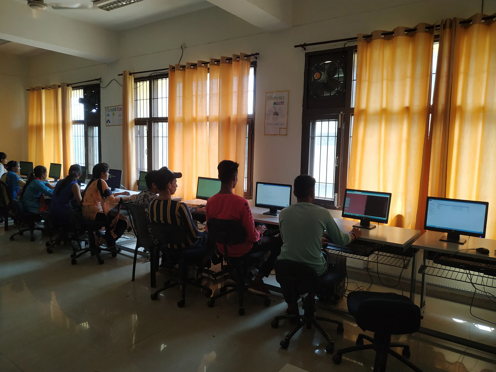

Computer Science Engineering
In-demand CS Engineering! Modern world runs on computers, and our department equips you with top-notch
software & hardware labs, Wi-Fi included. Ready to code the future?

Computer Science Engineering in a Nutshell
- Hardware & Software Mastery: Understand computer workings, peripherals, operating systems, and software installation.
- Architecture & Microprocessors: Grasp microprocessor architecture, interfacing techniques, and interrupts.
- System & Programming Savvy: Build computers, design algorithms, code in high-level and assembly languages, master system software and popular applications.
- Data & Networks: Comprehend databases, relational database management systems, network concepts, data structures, and programming techniques.
- Hardware & Software Mastery: Understand computer workings, peripherals, operating systems, and software installation.
- Web & Trends: Utilize web technologies, understand LAN and WAN networks, create local area networks, stay updated on IT trends.
- Applied Sciences & Design: Apply scientific principles and mathematics for development, understand web page design.
- Hardware & Networking Practice: Get hands-on with computer hardware and networking systems.
Our Labs

Project Labs
A project lab in a college computer science department is a dedicated space where
students work
on hands-on projects, typically as part of a course or program. These projects can be
individual
or group-based and involve various aspects of computer science
RDBMS and Programming Labs
Both RDBMS and Programming labs offer valuable learning experiences for students
pursuing careers in computer science, IT, and related fields. RDBMS labs equip students
with data management skills, while Programming labs hone their software development
abilities.
Project Labs
Project Labs
Project Labs